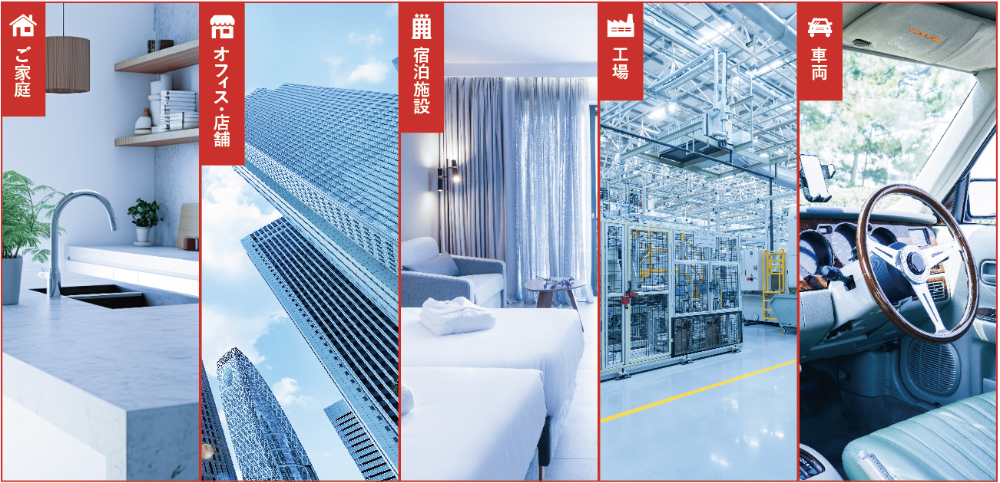
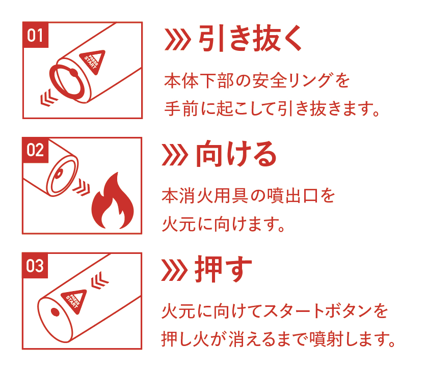
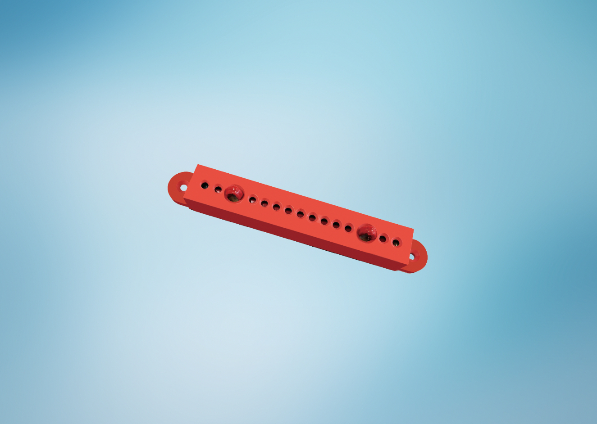
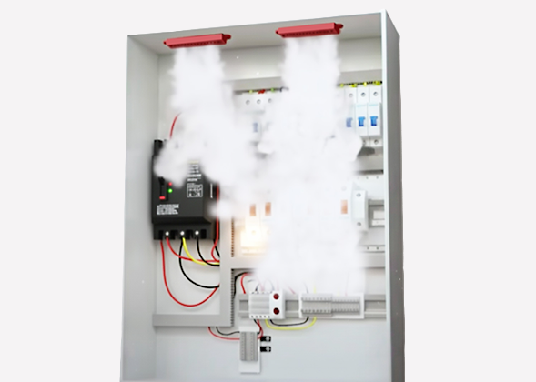

PRODUCTS
取り扱い製品
KECELUN
ケセルンは、世界各国で採用が広がる次世代の小型消火具です。 ナノ粒子を利用した独自の技術により、残留物をほとんど残さず、環境にも人体にも安全。 ガス加圧式ではないため破裂リスクがなく、メンテナンスも不要です。 コンパクトで持ち運びやすいサイズながら初期火災にしっかり対応できます。

01.
様々なシーンで
使用できます
小型・軽量でメンテナンス不要だから、家庭、車両、キッチン、テナント、工場など様々な場面で活躍します。

02.
使い方は簡単。
3ステップで迷わず消火。
初めてでも迷わず使える、シンプルな操作性。誰でもすぐに、安全に火を消せるよう設計されています。
KESTIC
ケスティックは、電気設備まわりの火災リスクに備える次世代のスティック型消火具です。
コンパクトな設計ながら、小さな火種を自動で感知し、3〜5秒でエアロゾル消火剤を放出。
無人のときでも確実に初期消火を行い、工場や施設、家庭の安全を守ります。
取り付けは「貼るだけ」または「ビス固定」で簡単。日常に寄り添う安心の仕組みです。

01.
電気火災に強い安心
ケスティックは、コンセント・分電盤・電気機器まわりなど、電気系統の自然発火に特化した消火具です。無人の夜間や留守中にも作動し、瞬時に空間を充満させて火を消し止めます。

02.
簡単に取り付けられます
ケスティックは、シールを剥がして貼るだけ、またはビスで固定するだけの簡単設置。専門知識や工具をほとんど必要とせず、誰でもすぐに導入できます。一度設置すれば5年間交換不要で、日常の点検やメンテナンスの手間もかかりません。